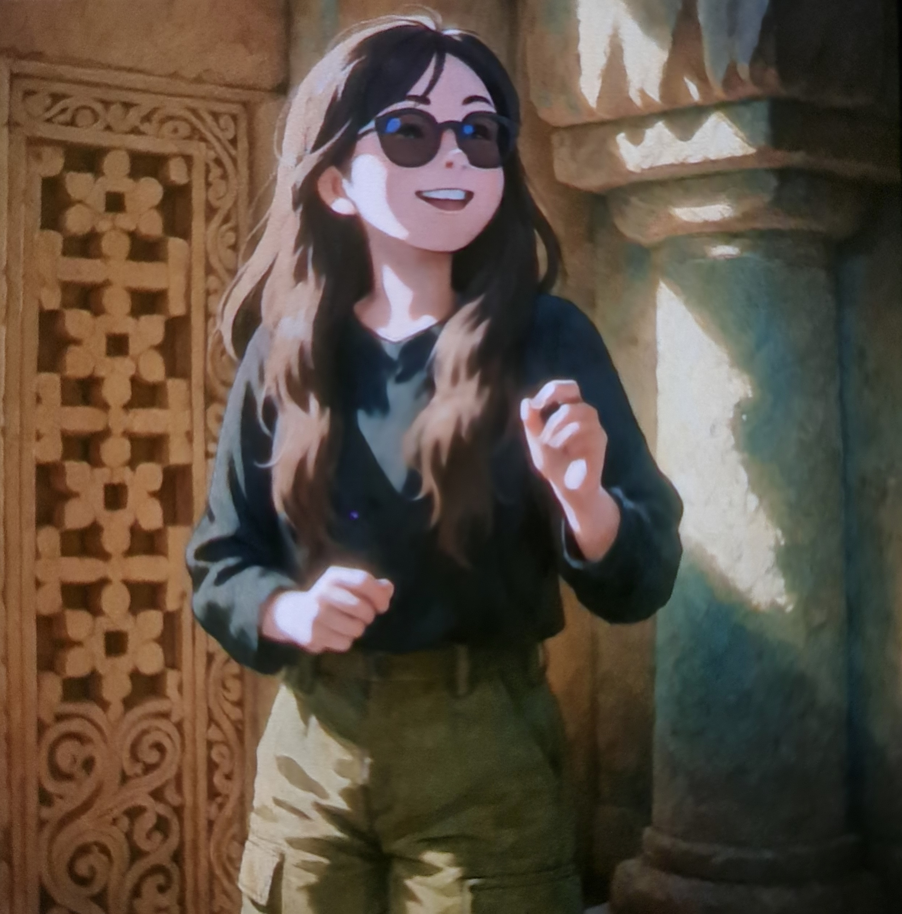

Pedagogical Clarity
You possess the rare faculty of stripping away academic opacity. By breaking daunting formulas into intuitive mental models, you make knowledge accessible and captivating.
In recognition of your tireless patience, the calm confidence you instill, and the quiet devotion with which you guide curious minds toward their highest potential.

True mentorship is rarely loud. It lives in the unhurried moments: the willingness to revisit a theorem for the fourth time without frustration, the calm reassurance when an exam approaches, and the quiet discipline that transforms hesitation into understanding.
In your classroom, learning is never an ordeal to be endured. It is an intentional, welcoming space where every student is encouraged to ask, to explore, and to discover that difficulty is merely an invitation to grow.
“To teach is to touch the future with kindness and certainty.”
The distinctive qualities that define every tuition session and leave an indelible impression.
You possess the rare faculty of stripping away academic opacity. By breaking daunting formulas into intuitive mental models, you make knowledge accessible and captivating.
No question is ever dismissed as trivial. Your classroom remains an emotionally safe sanctuary where a student can admit what they do not know without hesitation or embarrassment.
When tests and performance pressures create self-doubt, your calm equilibrium brings grounding. You replace exam panic with structured preparation and quiet composure.
More than conveying syllabus answers, you teach students how to think independently. You see the dormant capability within each learner long before they recognize it themselves.
How guidance from an exceptional educator transforms academic life over time.
Entering tuition laden with confusion, fear of asking questions, and feeling overshadowed by complex coursework.
Palak Mam patiently dissects fundamentals step-by-step. The initial friction dissolves into genuine curiosity.
Problems that once felt impossible are now solved with methodical confidence and intellectual poise.
Carrying forward not merely good grades, but an enduring discipline and self-assurance that shapes future ambitions.
Prayers and hopes for the one who invests so selflessly into the dreams of others.
May your daily routine bring you moments of stillness, fulfillment, and restorative rest.
May you be blessed with abundant vitality, good health, and joyful energy throughout every season.
May every personal goal and scholarly aspiration you pursue flourish with effortless grace.
May you receive in tenfold the warmth, optimism, and inspiration you generously bestow upon us.
On this special day, I wanted to set aside our ordinary routine of syllabi and chapters to write a note of heartfelt appreciation. It is rare to find a teacher who combines thorough command of subject matter with such generous warmth, but that is precisely who you are.
Tuition classes can easily become another tiring obligation in a student’s week. With you, however, they have always been a sanctuary of clarity. You never count how many times a difficult doubt must be repeated; you simply meet every question with unhurried patience and genuine encouragement.
Your lessons have done much more than help navigate exams. They have taught me the value of structured thinking, perseverance in the face of initial confusion, and the confidence that comes from truly understanding the fundamentals.
May this birthday mark the beginning of an extraordinary year filled with happiness, deep fulfillment, radiant health, and quiet peace. Thank you for everything you do.